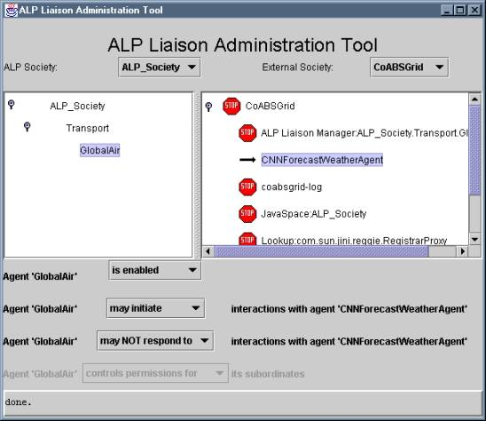

<html>

<head>
<meta http-equiv="Content-Language" content="en-us">
<meta http-equiv="Content-Type" content="text/html; charset=windows-1252">
<meta name="GENERATOR" content="Microsoft FrontPage 4.0">
<meta name="ProgId" content="FrontPage.Editor.Document">
<title>Liaison Capability Tutorial</title>
</head>

<body>

<table border="0" width="100%">
  <tr>
    <td width="33%"><font size="2"><b>Liaison Capability Tutorial</b></font></td>
    <td width="33%">
      <p align="center"><a href="timeouts.html"></a>
      <a href="index.html"></a>
      <a href="factories.html">
      </a></td>
    <td width="34%">
      <p align="right"><b><font size="2"><a href="../javadoc/index.html">Javadoc</a></font></b></td>
  </tr>
</table>
<hr color="#800080">
<h2 align="left"><b>Liaison Administration</b></h2>
<blockquote>
  <p class="MsoNormal">Administration in this context refers to the management
  of liaison permissions. It is clearly undesirable to allow any ALP agent to
  interact with any external agent that may happen to be accessible; there must
  be some mechanism that both allows society administrators to specify and
  change what kinds of interactions are acceptable, and allows PlugIns to
  rapidly check those permissions to control attempted interactions.<o:p>
  </o:p>
  </p>
  <p class="MsoNormal">In order for liaison administration to be consistent in
  the distributed ALP context, there must be a global, society-wide perspective
  on what kinds of interactions are permitted.<span style="mso-spacerun: yes">&nbsp;
  </span>The ALP infrastructure does not currently provide any kind of global
  directory or yellow pages of agents in an ALP society, so there is no
  convenient existing place to record this kind of global permission
  information.<span style="mso-spacerun: yes">&nbsp; </span>Furthermore, new
  external agents can appear at any time, so interaction permissions cannot be
  simply specified <i>a priori </i>in some kind of fixed configuration tables.<span style="mso-spacerun: yes">&nbsp;
  </span>But however this permission status is recorded, it must be persistent
  and independent of failure/restart by individual ALP agents, external agents,
  or the administration facilities themselves.<o:p>
  </o:p>
  </p>
  <p class="MsoNormal">The liaison capability provides an experimental
  implementation of this mechanism built upon a Jini JavaSpaces service. A single
  named JavaSpace associated with an ALP society stores information about ALP
  and external agents, and records whether or not individual ALP agents can
  initiate or respond to interactions with specific external agents.<span style="mso-spacerun: yes">&nbsp;
  </span>These permissions are changed in a persistent and transaction-safe
  manner under human control through a GUI that displays both an ALP society and
  an external agent society side by side.</p>
  <p class="MsoNormal" align="center"><span style="font-size:12.0pt;font-family:&quot;Times New Roman&quot;;
mso-fareast-font-family:&quot;Times New Roman&quot;;mso-ansi-language:EN-US;mso-fareast-language:
EN-US;mso-bidi-language:AR-SA"><!--[if gte vml 1]><v:shapetype id="_x0000_t75"
 coordsize="21600,21600" o:spt="75" o:preferrelative="t" path="m@4@5l@4@11@9@11@9@5xe"
 filled="f" stroked="f">
 <v:stroke joinstyle="miter"/>
 <v:formulas>
  <v:f eqn="if lineDrawn pixelLineWidth 0"/>
  <v:f eqn="sum @0 1 0"/>
  <v:f eqn="sum 0 0 @1"/>
  <v:f eqn="prod @2 1 2"/>
  <v:f eqn="prod @3 21600 pixelWidth"/>
  <v:f eqn="prod @3 21600 pixelHeight"/>
  <v:f eqn="sum @0 0 1"/>
  <v:f eqn="prod @6 1 2"/>
  <v:f eqn="prod @7 21600 pixelWidth"/>
  <v:f eqn="sum @8 21600 0"/>
  <v:f eqn="prod @7 21600 pixelHeight"/>
  <v:f eqn="sum @10 21600 0"/>
 </v:formulas>
 <v:path o:extrusionok="f" gradientshapeok="t" o:connecttype="rect"/>
 <o:lock v:ext="edit" aspectratio="t"/>
</v:shapetype><v:shape id="_x0000_i1025" type="#_x0000_t75" style='width:411pt;
 height:355.5pt'>
 <v:imagedata src="file:///C:/TEMP/msoclip1/01/clip_image001.png" o:title=""/>
</v:shape><![endif]-->
  </span><o:p>
  </o:p>
  </p>
  From the perspective of an <code>Interactor</code> developer, most of the
  capability for liaison administration is built into the <code>LiaisonDeputy</code>
  class.&nbsp; <span style="font-size: 12.0pt; font-family: Times New Roman; mso-fareast-font-family: Times New Roman; mso-ansi-language: EN-US; mso-fareast-language: EN-US; mso-bidi-language: AR-SA">E</span><span style="font-size:12.0pt;font-family:&quot;Times New Roman&quot;;mso-fareast-font-family:
&quot;Times New Roman&quot;;mso-ansi-language:EN-US;mso-fareast-language:EN-US;
mso-bidi-language:AR-SA">ach deputy determines which interactions are
  permissible by consulting the administration JavaSpace through the <code>LiaisonManager</code>.<span style="mso-spacerun: yes">&nbsp;
  </span>These checks are made at the start of each potential interaction with a
  distinct external agent.<span style="mso-spacerun: yes">&nbsp; </span>Depending
  on configuration settings and permissions known to its deputy, an <code>Interactor</code>
  may choose to suspend or ignore attempts to interact with some or all external
  agents.&nbsp; However, it is currently the responsibility of each <code>Interactor</code>
  to check with the deputy to verify that a given interaction is
  permissible.&nbsp; Therefore, it is possible to create an <code>Interactor</code>
  that bypasses this check, and thereby bypasses all liaison
  administration.&nbsp; (However, all interactors supplied with the liaison
  capability such as the <code>CoABSLookupInteractor</code> <i>do </i>perform
  this check.)</span>
  <p><span style="font-size: 12.0pt; font-family: Times New Roman; mso-fareast-font-family: Times New Roman; mso-ansi-language: EN-US; mso-fareast-language: EN-US; mso-bidi-language: AR-SA">A
  few lines of code are sufficient to perform the administration check, and it
  should normally be performed during the execution of an <code>Interactor</code>'s
  <code> begin</code>
  method.&nbsp; We'll show an example in <font color="#FF0000"> red</font> in our
  <code>TrafficMonitorInitiator</code>:</span></p>
  <blockquote>
  <pre>import com.globalinfotek.coabsgrid.*;
<font color="#FF0000">import com.prc.alp.liaison.admin.*;
</font>import com.prc.alp.liaison.interact.*;
import com.prc.alp.liaison.plugin.*;

public class TrafficMonitorInitiator
  implements MultithreadInteractor {
  
  CoABSLiaisonDeputy deputy = null;
  AgentRep agent = null;
  PlanData pData = null;

  public TrafficMonitorInitiator (CoABSLiaisonDeputy dep,
                                  AgentRep extAgent) {
    deputy = dep;
    agent = extAgent;
  }
  
  public Object begin (Object o, Interaction iaction)
    throws ActionTimeoutException, InteractionTimeoutException {
    pData = (PlanData) o;
    <font color="#FF0000">ExternalAgentReference extAgRef = 
      ExternalAgentReference.create(dep.externalManager().society,
                                    dep.externalManager().neighborhood,
                                    agent.getName(),
                                    &quot;&quot;, &quot;&quot;, &quot;&quot;);
    if ( !deputy.canInitiateTo(extAgRef) ) {
      if ( !deputy.waitForPermission() )
        state = &quot;ABORT&quot;;
      else {
        do {
          System.out.println(&quot;TrafficMonitorInitiator waiting for permission&quot;);
          iaction.sleep(10000);
        } while ( !deputy.canInitiateTo(extAgRef) );
      }
    }</font>
    return &quot;SEND&quot;;
  }

  public Object receive (Object o, Interaction iaction)
    throws ActionTimeoutException, InteractionTimeoutException {
    Object reply;
    while ( (reply = deputy.getLastReply(iaction.getID())) == null )
      // need to wait for external agent to respond with a message
      iaction.sleep(500);
    Object result = ... // code that can extract a useful result
                        //   from the raw message text returned by
                        //   the external agent
    // Have the deputy save the result extracted from this message in its
    // saved reply hash table.  Use the unique ID of this interaction
    // instance both as the key and the result object as the value.
    deputy.saveReply(iaction.getID(), result);
    return &quot;END&quot;;
  }

  public Object send (Object o, Interaction iaction)
    throws ActionTimeoutException, InteractionTimeoutException {
    iaction.sleep(0);
    String replyWith = iaction.getID();
    String myMsg = ... // code that creates an outgoing message, using
                       //   information extracted from pData, as well as
                       //   a reference to the value of replyWith, so that
                       //   replies to this message that are received
                       //   later can be &quot;recognized&quot; in the handle method.
    try {
      extAgent.addMessage
        (new Message(extAgent.getName(), deputy.getGridAgentRep(), myMsg));
      // Have the deputy save a reference to this outgoing message in its
      // pending reply hash table.  Use the unique ID of this interaction
      // instance both as the key and the value, since each interaction
      // using this interactor generates only one outgoing message.
      deputy.putPending(iaction.getID(), iaction.getID());
      return &quot;RECEIVE&quot;;
      } catch (Exception ex) {
        ...
      }
  }

  public Object normalEnd (Object o, Interaction iaction)
    throws ActionTimeoutException, InteractionTimeoutException {
    iaction.sleep(0);
    // Retrieve and return the result object associated with
    // this interaction
    return deputy.getLastReply(iaction.getID());
  }

  public void abnormalEnd (Object o, Interaction iaction)
    throws ActionTimeoutException, InteractionTimeoutException {
    iaction.sleep(0);
    System.err.println(&quot;Something bad happened!&quot;);
  }

  public ActionType nextAction (Object o, Interaction iaction, 
                                boolean priorActExpired) {
    if ( o == null )
      return new ActionType(&quot;BEGIN&quot;);
    else if ( priorActExpired )
      return new ActionType(&quot;ABORT&quot;);
    else if ( (String) o.equals(&quot;RECEIVE&quot;) )
      return new ActionType(&quot;RECEIVE&quot;, 10000);
    else
      return new ActionType((String) o);
  }
  
  public boolean handle(Object obj, Object context, Interaction iaction) {
    Message msg = (Message) obj;
    ExternalAgentReference sender = (ExternalAgentReference) context;
    if ( !sender.agent.equals(extAgent.getName()) ) {
      return false; // message is not from the agent we recognize;
    }
    // Check to see if the received message is related to the current
    //   interaction instance
    String msgText = msg.getRawText();
    String expectedID = iaction.getID();
    String replyID = ... // code to extract some reply ID from the
                         //   received message text
    String pendingReply = (String) deputy.getPending(replyID);
    if ( expectedID.equals(pendingReply) ) {
      // The message is a valid response for this interaction
      //   so have the deputy save this response
      deputy.saveReply(expectedID, msg.getRawText());
      return true;
    } else
      // Otherwise, it's a response from a different interaction, 
      //   so it needs to be handled by that one
      return false;    
  }

}</pre>
  </blockquote>
  <p align="left">The administration check itself is a single method call (<code>LiaisonDeputy.canInitiateTo</code>)
  with a single argument: an <code>ExternalAgentReference</code> that identifies
  the external agent associated with the current interaction thread. The <code>canInitiateTo</code>
  method examines JavaSpace entries to verify that the ALP/Cougaar agent has
  been enabled for external liaisons, and is permitted to initiate an
  interaction with the specific external agent.&nbsp; (A similar method, <code>LiaisonDeputy.canRespondTo</code>,
  checks to see if the local agent may participate in an <code>Interaction</code>
  initiated by an external agent.)</p>
  <p align="left">If the deputy indicates that the <code>Interactor</code> does <i>not
  </i>have permission to proceed with the requested liaison, the <code>Interactor</code>
  should ask the deputy if it can wait for permission to be granted by calling <code>LiaisonDeputy.waitForPermission</code>.&nbsp;
  (This is determined by a configuration setting using the <code>&quot;wait&quot;</code>
  parameter of the individual liaison PlugIn or the <code>com.prc.alp.liaison.wait</code>
  property for all PlugIns in a JVM.)&nbsp; In our example, if it <i>can </i>wait,
  the <code>begin</code> method simply goes into an infinite loop that
  periodically prints out an advisory message and polls the deputy to see if
  permission has been granted.&nbsp; Otherwise, it returns an <code>&quot;ABORT&quot;</code>
  state, which will cause the <code>abnormalEnd</code> action method to run
  next.</p>
  <p align="left">Note that it is possible to develop an <code>Interactor</code>
  that does not perform this permission check, and that therefore bypasses
  liaison administration.&nbsp; A PlugIn developer using a prebuilt <code>Interactor</code>
  that makes this check (e.g., the <code>CoABSLookupInteractor</code>) cannot
  bypass it directly.&nbsp; If the source code is available, the administratable
  <code>Interactor</code> can simply be rewritten to remove the permission
  check.&nbsp; If not, <i>all </i>permission checks can be effectively disabled
  by changing the value of the constant <code>LConstants.DEFAULT_LIAISON_STATUS</code>
  from <code>false</code> to <code>true</code> and then recompiling the entire
  liaison capability.</p>
  <p align="left">Although fully functional (except for the domain-dependent
  code represented by ellipses), our <code> TrafficMonitorInitiator</code> is only capable of initiating interactions with
  external agents.&nbsp; The next section explores the issue of allowing PlugIns
  to respond to interactions that are initiated by external agents.</p>
</blockquote>
<hr color="#800080">
<table border="0" width="100%">
  <tr>
    <td width="33%"><font size="2"><b>Liaison Capability Tutorial</b></font></td>
    <td width="33%">
      <p align="center"><a href="timeouts.html"></a>
      <a href="index.html"></a>
      <a href="factories.html">
      </a></td>
    <td width="34%">
      <p align="right"><b><font size="2"><a href="../javadoc/index.html">Javadoc</a></font></b></td>
  </tr>
</table>
<p align="center"><font size="1"><a href="copyright.html">Copyright Notice</a></font></p>
<p align="left">&nbsp;</p>

</body>

</html>
